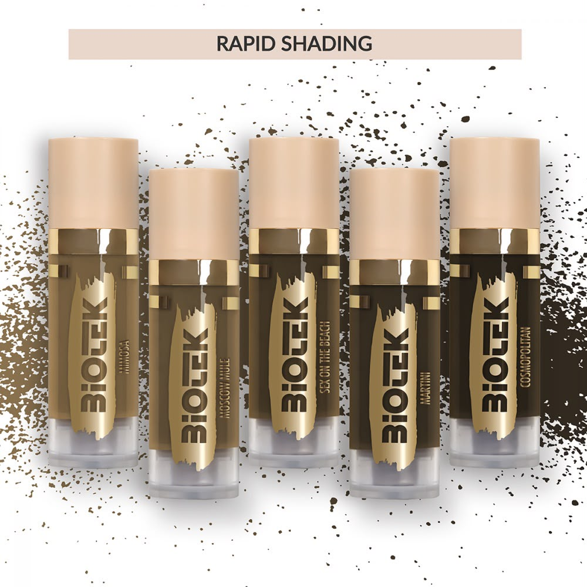

Powder Brows
Zachte schaduw, strak in vorm.
Powder brows geven direct meer rust in je gezicht. De vorm wordt eerst perfect uitgetekend, daarna bouwen we kleur op in zachte lagen voor een natuurlijk en luxe resultaat.
Welkom bij onze warme, elegante PMU-salon, waar verfijnde behandelingen zorgen voor een stralend resultaat.
Lees hier over onze behandelingen, de kwaliteit van onze producten, onze academy en de nazorg die zorgt voor blijvend mooie resultaten.
Powder Brows
Powder brows geven direct meer rust in je gezicht. De vorm wordt eerst perfect uitgetekend, daarna bouwen we kleur op in zachte lagen voor een natuurlijk en luxe resultaat.

Hybrid Brows
Hybrid Brows is een luxe verfbehandeling waarbij zowel de huid als de haartjes worden gekleurd. Het resultaat? Strakke, vollere wenkbrauwen die tot 10 dagen op de huid en 4 tot 6 weken op de haartjes zichtbaar blijven.

Nano Combi Brows
Nano combi brows combineren fijne hairstrokes met zachte schaduw. Hierdoor ontstaat een realistisch, vol en verfijnd brow-resultaat met extra diepte.

Infralash Eyeliner
Bij infralash plaatsen we pigment subtiel tussen de wimperrand. Je blik oogt direct voller en frisser, terwijl het resultaat zacht en natuurlijk blijft.

Eyeliner boven & onder
Met permanente eyeliner boven en/of onder creëren we meer diepte en kracht in jouw ogen. De eyeliner kan volledig naar wens worden afgestemd: van subtiel en zacht tot iets krachtiger en strakker.

Lipblush
Lipblush herstelt toon en contour zonder lipstick-effect. Ideaal als je lippen net wat meer definitie en levendigheid mogen krijgen, elke dag opnieuw.

Biotek
Voor onze behandelingen kiezen wij bewust voor Biotek. Hun pigmenten staan wereldwijd bekend om hun stabiliteit, veiligheid en langdurige resultaat, met meer dan 40 jaar expertise.

Academy
In onze academy leren we cursisten stap voor stap de basis en verfijning van PMU. Van vormbepaling tot pigmentplaatsing, met persoonlijke begeleiding in elke fase.


Onze behandelingen
Wij zijn specialist in elke behandeling die wij bieden. Ben je benieuwd wat onze signature behandelingen inhouden? Graag vertellen wij je hierover.
Met ombré of powder brows creëren we een zachte, egale schaduw die zorgt voor meer definitie en symmetrie. Het resultaat blijft natuurlijk, maar geeft direct meer rust en structuur in je gezicht. Perfect als je dagelijks je wenkbrauwen tekent of last hebt van ongelijkmatige of dunne brows. Het resultaat blijft gemiddeld 1,5 tot 2 jaar mooi, afhankelijk van huidtype en nazorg.
Volle wenkbrauwen, direct perfect gestyled. Hybrid Brows is een luxe verfbehandeling waarbij zowel de huid als de haartjes worden gekleurd. Het resultaat? Strakke, vollere wenkbrauwen die tot 10 dagen op de huid en 4 tot 6 weken op de haartjes zichtbaar blijven. Ideaal als je een natuurlijke look wilt of eerst wilt ervaren hoe vollere wenkbrauwen bij je staan, zonder direct voor semi-permanente make-up te kiezen.
Bij infralash eyeliner plaatsen we pigment subtiel tussen de wimperrand. Hierdoor lijken je wimpers voller en je ogen sprekender, zonder zichtbare eyeliner. Ideaal voor een dagelijkse frisse, open blik zonder make-up. Geschikt voor iedereen die een natuurlijke oogopslag wil versterken zonder harde lijnen. Blijft gemiddeld 1 tot 2 jaar zichtbaar.
Lip blush herstelt de natuurlijke kleur van je lippen en verfijnt de contour. De behandeling geeft een frisse, verzorgde uitstraling zonder lipstick-effect. Perfect als je lippen wat bleker, ongelijk van kleur of minder gedefinieerd zijn. Je geniet dagelijks van een zachte, gezonde lipkleur zonder moeite. Het resultaat blijft gemiddeld 2 tot 3 jaar mooi.
Nano brows zijn fijne, realistische haartjes die met een ultradunne naald worden geplaatst. Ideaal voor wie een zo natuurlijk mogelijk resultaat wil dat nauwelijks van echte wenkbrauwhaartjes te onderscheiden is. Perfect als je weinig eigen haartjes hebt of kale plekjes wilt opvullen. Blijft gemiddeld 1 tot 2 jaar zichtbaar.
Bij combi brows combineren we hairstrokes met een zachte powder shading. Dit zorgt voor zowel natuurlijke haartjes als extra diepte en definitie. Ideaal als je het beste van beide werelden wilt: natuurlijk en strak. Geschikt voor bijna elk huidtype. Blijft gemiddeld 1,5 tot 2 jaar mooi.
Bij deze behandeling wordt een subtiele of meer opvallende eyeliner boven het oog geplaatst, afgestemd op jouw oogvorm en wensen. Perfect als je dagelijks eyeliner draagt en tijd wilt besparen. Blijft gemiddeld 1 tot 3 jaar zichtbaar.
Voor een intensere oogopslag kan ook de onderlijn of een combinatie van boven en onder gepigmenteerd worden. Zorgt voor meer diepte en expressie van de ogen. Wordt altijd afgestemd op wat het beste bij jouw gezicht past.
Heb je oude of vervaagde permanente make-up die niet meer mooi is? Met een correctiebehandeling verbeteren we de vorm, kleur en symmetrie van je wenkbrauwen. Alleen mogelijk na beoordeling van de huidige PMU.
Reviews
Reviews worden geladen...

Boek je moment
Subtiel, elegant en volledig afgestemd op jouw gezicht. Plan je behandeling in en ervaar hoe luxe PMU hoort te voelen.